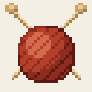

会社員のかたわら、1人でスマホアプリを作っています。
試験勉強、冷蔵庫の中身、禁酒、推し活など、身近でちょっと面倒なことを手軽にするアプリです。どれもアカウント登録なしで使えて、記録は端末の中だけに残ります。
ニガテ帳
国家試験の過去問(介護福祉士・管理栄養士・理学療法士・社会福祉士・臨床検査技師)
間違えた問題だけが残って、
2回続けて正解すると消える問題集です。
- 介護福祉士750問・管理栄養士1,000問・理学療法士1,000問・社会福祉士258問・臨床検査技師1,000問、全問に解説つき
- 本番の予想点と、科目ごとの正答率が毎日わかる
- どの試験も直近1回分は無料。完全版は試験ごとの買い切り
iPhone 公開中(6試験) / Android テスト中
Android テスト参加: ニガテ帳(管理栄養士・理学療法士・介護福祉士・社会福祉士) / 臨床検査技師


アプリ一覧

てくあみ
歩いて編む歩数計・広告なし
歩いた分だけ、マフラーがひと目ずつ編み上がる歩数計です。1段はだいたい500歩。模様は編み上がるまで秘密です。
Android テスト中

DIAMOND NINE
野球シミュレーション・無料
選手を集めて、育てて、打線を組んで、1年を進める野球シミュレーションです。弱小チームから優勝を目指します。
Android テスト中

介護ニガテ帳
介護福祉士 国家試験の過去問
過去問750問。事例問題は事例文つき、図もそのまま。間違えた問題だけが残ります。
ニガテ帳(上)の中で選べるようになりました


うちわキラリ
うちわ文字・ファンサうちわ作成
推しの名前を入れるだけで、うちわ文字を原寸で作れます。そのまま印刷できます。
iPhone 準備中 / Android テスト中


やめ日和
禁酒・禁煙カウンター
お酒とたばこ、やめた日数と浮いたお金を別々に記録します。片方だけでも、両方でも使えます。
Android テスト中


あつよみ
暑さ指数と熱中症アラート
暑さ指数を見やすく出して、危ない日に知らせます。環境省のデータ提供が始まる春から動きます。
2027年春に公開予定
Android 版のテスターを募集しています
Google Play で一般公開するには、14日間のテストが必要です。入れて14日間置いておいてもらえるだけで助かります。相互テストも歓迎です。
- テスター用のグループに参加する(1回で全部のアプリに入れます)
- 下のアプリの参加ページを開いて「テスターになる」を押す(この人数が Google Play の「12人」に数えられます)
- 同じページの「Google Play でダウンロード」から入れる
いま人数が足りないアプリ